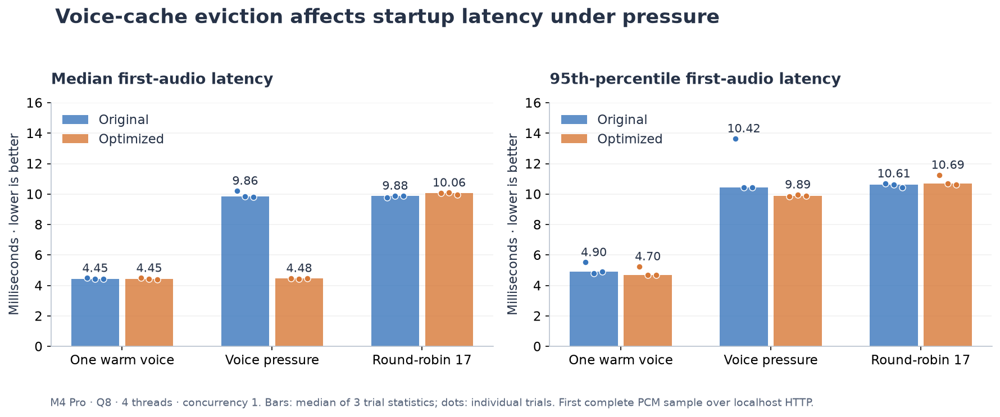
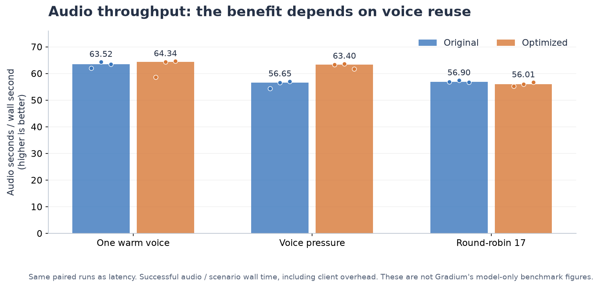
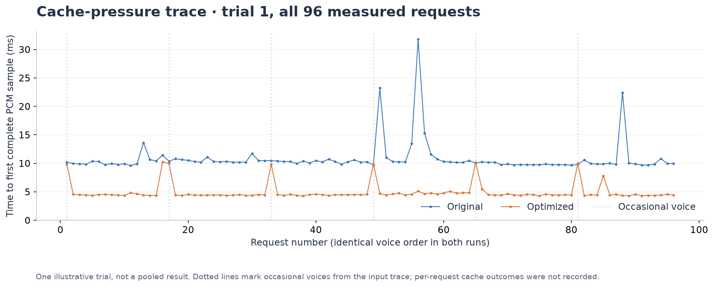
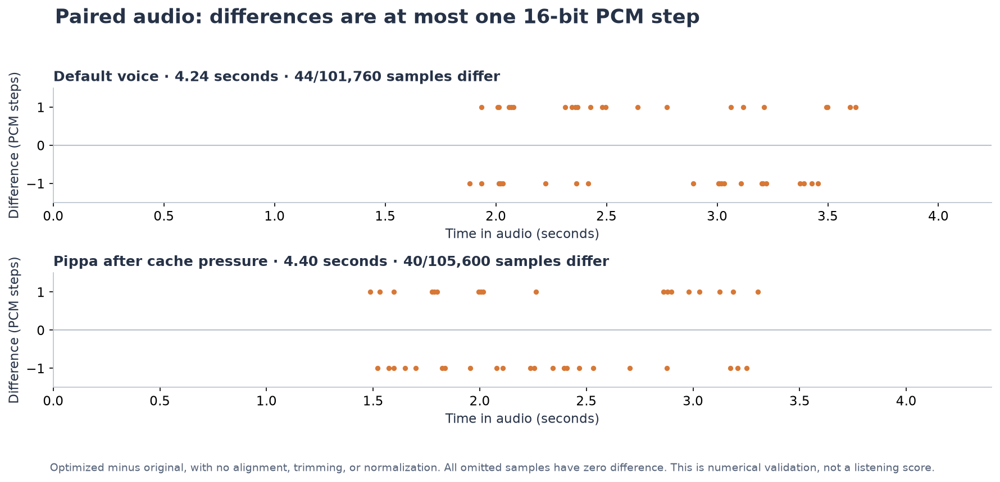

Phonon 31m English · Serving experiment · 1 November 2026
Keep frequently used voices ready to speak.
A bounded LRU cache preserves useful voice prefixes when occasional voices arrive. These paired measurements show where that helps, where it does not, and how closely the audio matches.
Controlled voice pressure · median first audio9.856 → 4.479 ms54.6% lower · median of three trial medians
Controlled voice pressure · audio throughput56.65 → 63.40Audio seconds per wall second · 11.9% higher
M4 Pro · Q8 · four CPU threads · concurrency one. Constructed 17-voice workload. Gradium's published figures exclude initial voice conditioning and use different hardware and inputs; they are not a directly comparable baseline.
All workloads, including controls
The single-voice first-audio control was unchanged. Cycling through 17 voices in a 16-entry cache did not improve. Dots show all three trials; bars show the median of their statistics.

First complete PCM sample received over localhost HTTP. Lower is better. Labels are median trial statistics.
1,764 measured requests, 204 warm-ups, zero errors. All paired trials retained. Higher is better.
What happens as voices change
The first pressure trial shows the same 96 requests in identical order. Occasional voices interrupt a frequently reused set; the optimized cache retains most of that set. Per-request cache outcomes were not recorded.

Dotted lines mark occasional-voice arrivals from the workload, not a proven cause of each spike. See the linked raw records for every trial.
Listen before and after
Hey Gradium team, this is Rudraksh loving the phonon so far!
Same model, voice, seed, request sequence and CPU options within each pair. Unmodified 24 kHz mono WAVs, with no alignment, trimming or loudness normalization. These samples are separate from the repeated timing experiment.
Default voice · 4.24 seconds each
Pippa after cache pressure · 4.40 seconds each

Matching sample counts; fewer than 0.05% of samples differ. Numerical agreement does not establish naturalness, pronunciation accuracy or speaker similarity. No WER or blinded listening test was run.Sample metadata and numerical results